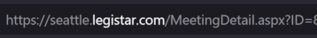

Searching for Your Municipality’s Legistar ID¶
Legistar is the most widely used legislation tracking tool in the nation. We are leveraging Legistar’s wide coverage to help standardize and streamline part of our onboarding process by creating generalized Legistar scrapers so you can potentially skip the step of creating an event scraper. Unfortunately a municipality’s Legistar ID isn’t always easily discoverable so here are some steps to find it.
Go to your municipality’s council page and locate the meeting agendas.
Look at the URL of the website and if it contains “legistar”, then your municipality uses Legistar. If it does not, your municipality likely does not use Legistar and you should review step three for another method for determining if your municipality utilizes Legistar.
If step 2 fails, try an online search with query words such as “Legistar municipality council agendas”. If your municipality uses Legistar, the top search results will likely include URLs like “*.legistar.com”.
For example, top results for “Seattle council Legistar agendas” include https://seattle.legistar.com/Calendar.aspx.The Legistar ID is the substring before “.legistar.com.” In the example above, the Legistar ID would be “seattle.”
To verify your Legistar ID, you can test it out on the Legistar test client: https://webapi.legistar.com/Help/Api/GET-v1-Client-Bodies. Click on “Test API” in the lower right corner, set “{Client}” equal to what you think is the Legistar key and click “Send”. If you get back any error message, it is likely that while your municipality uses Legistar, the data isn’t made publically available or they use a different key.
For more detailed Legistar information, please contact your municipality clerk.
{kind=link}